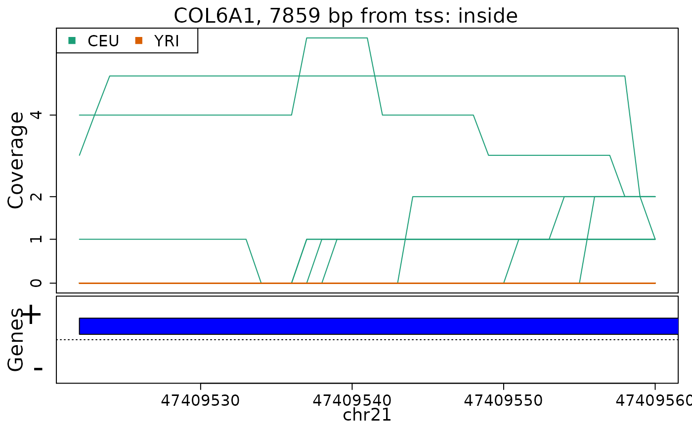
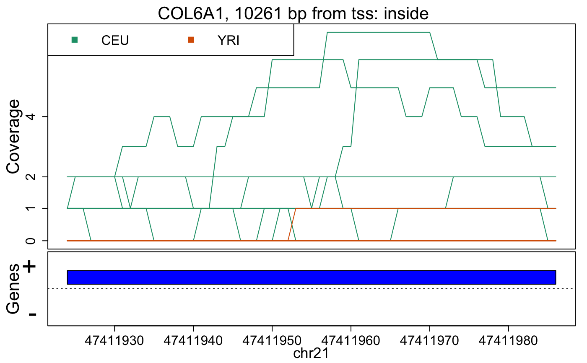
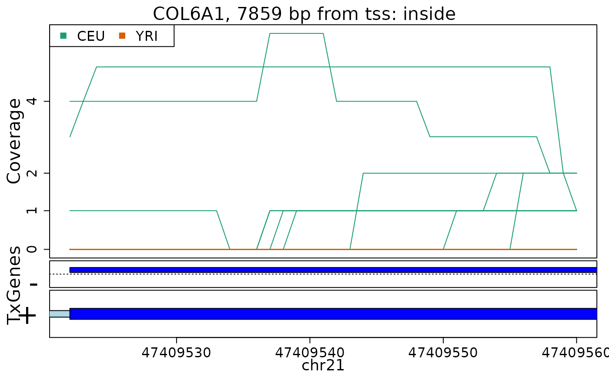
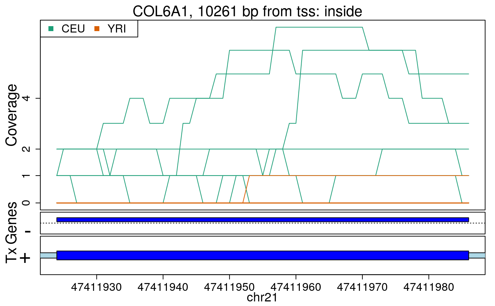

R/plotRegionCoverage.R
plotRegionCoverage.RdThis function takes the regions found in calculatePvalues and assigns them genomic states contructed with makeGenomicState. The main workhorse functions are countOverlaps and findOverlaps. For an alternative plot check plotCluster which is much slower and we recommend it's use only after quickly checking the results with this function.
plotRegionCoverage(
regions,
regionCoverage,
groupInfo,
nearestAnnotation,
annotatedRegions,
txdb = NULL,
whichRegions = seq_len(min(100, length(regions))),
colors = NULL,
scalefac = 32,
ask = interactive(),
ylab = "Coverage",
verbose = TRUE
)| regions | The |
|---|---|
| regionCoverage | The output from getRegionCoverage
used on |
| groupInfo | A factor specifying the group membership of each sample. It will be used to color the samples by group. |
| nearestAnnotation | The output from matchGenes
used on |
| annotatedRegions | The output from annotateRegions
used on |
| txdb | A TxDb object. If specified, transcript annotation will be extracted from this object and used to plot the transcripts. |
| whichRegions | An integer vector with the index of the regions to plot. |
| colors | If |
| scalefac | The parameter used in preprocessCoverage. |
| ask | If |
| ylab | The name of the of the Y axis. |
| verbose | If |
A plot for every region showing the coverage of each sample at each base of the region as well as the summarized annotation information.
Andrew Jaffe, Leonardo Collado-Torres
## Load data
library("derfinder")
## Annotate regions, first two regions only
regions <- genomeRegions$regions[1:2]
annotatedRegions <- annotateRegions(
regions = regions,
genomicState = genomicState$fullGenome, minoverlap = 1
)
#> 2021-08-10 01:22:35 annotateRegions: counting
#> 2021-08-10 01:22:36 annotateRegions: annotating
## Find nearest annotation with bumphunter::matchGenes()
library("bumphunter")
library("TxDb.Hsapiens.UCSC.hg19.knownGene")
genes <- annotateTranscripts(txdb = TxDb.Hsapiens.UCSC.hg19.knownGene)
#> No annotationPackage supplied. Trying org.Hs.eg.db.
#> Getting TSS and TSE.
#> Getting CSS and CSE.
#> Getting exons.
#> Annotating genes.
nearestAnnotation <- matchGenes(x = regions, subject = genes)
## Obtain fullCov object
fullCov <- list("21" = genomeDataRaw$coverage)
## Assign chr lengths using hg19 information
library("GenomicRanges")
seqlengths(regions) <- seqlengths(getChromInfoFromUCSC("hg19",
as.Seqinfo = TRUE
))[
mapSeqlevels(names(seqlengths(regions)), "UCSC")
]
## Get the region coverage
regionCov <- getRegionCoverage(fullCov = fullCov, regions = regions)
#> extendedMapSeqlevels: sequence names mapped from NCBI to UCSC for species homo_sapiens
#> 2021-08-10 01:23:03 getRegionCoverage: processing chr21
#> 2021-08-10 01:23:03 getRegionCoverage: done processing chr21
#
## Make plots for the regions
plotRegionCoverage(
regions = regions, regionCoverage = regionCov,
groupInfo = genomeInfo$pop, nearestAnnotation = nearestAnnotation,
annotatedRegions = annotatedRegions, whichRegions = 1:2
)


## Re-make plots with transcript information
plotRegionCoverage(
regions = regions, regionCoverage = regionCov,
groupInfo = genomeInfo$pop, nearestAnnotation = nearestAnnotation,
annotatedRegions = annotatedRegions, whichRegions = 1:2,
txdb = TxDb.Hsapiens.UCSC.hg19.knownGene
)
#> 2021-08-10 01:23:03 plotRegionCoverage: extracting Tx info
#> 2021-08-10 01:23:06 plotRegionCoverage: getting Tx plot info


if (FALSE) {
## If you prefer, you can save the plots to a pdf file
pdf("ders.pdf", h = 6, w = 9)
plotRegionCoverage(
regions = regions, regionCoverage = regionCov,
groupInfo = genomeInfo$pop, nearestAnnotation = nearestAnnotation,
annotatedRegions = annotatedRegions, whichRegions = 1:2,
txdb = TxDb.Hsapiens.UCSC.hg19.knownGene, ask = FALSE
)
dev.off()
}